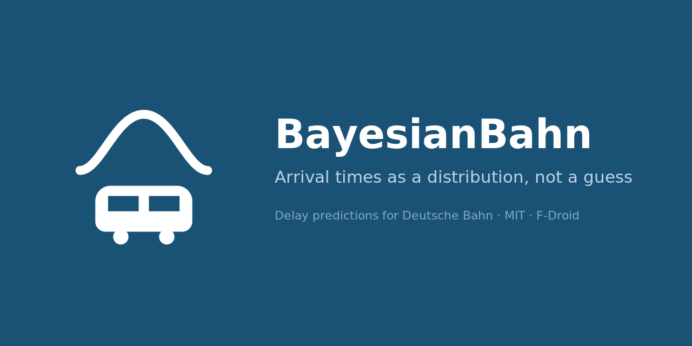

Empirical arrival-time predictions for Deutsche Bahn trains — as a distribution, not a point estimate.
Early release. Predictions are experimental. Always cross-check times and connections with DB’s official apps before relying on them.
The app predicts when a train will actually arrive from that train’s own delay history, rather than repeating the timetable. It answers with a median, an 80% credible interval, the full distribution, and — for a journey with a change — the probability of making it.
That is a checkable question, so it is checked. Every ten minutes DB’s own forecast is recorded for twenty stations across the network; the next day the public archive says when each train really arrived, and both forecasts are scored against it.